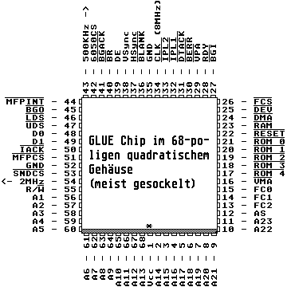

Previous
Next
TOC
Dies bedeutet: der Speicher ist zum Beispiel bei 15MB Ram wie folgt
verteilt:
Von $0 - $3fffff liegt das 4MB große ST-RAM (beim MegaST4), danach
kommen von $400000 - $DFFFFF 8MB Alternate RAM und von $E80000-
$EFFFFF plus den Bereich von $F20000 - $FBFFFF kommt noch 1MB
Alternate RAM dazu, welches benutzt werden kann (1MB = 1024 * 1024
Bytes).
Der Einbau der MagnumST Karte erfordert ausreichende Löterfahrung,
wenn der Prozessor (das ist der große Chip mit der Aufschrift 68000
und 64 Anschlußbeinchen) nicht gesockelt ist.
Wenn in Ihrem Rechner der Prozessor gesockelt ist, entfernen Sie ihn
aus dem Sockel und stecken die MagnumST Platine entsprechend der Mar-
kierung in den Sockel der Hauptplatine ein. Setzen Sie nun den Pro-
zessor oben auf den Sockel der MagnumST Karte ein. Sollte Ihr Pro-
zessor nicht gesockelt sein, löten Sie den mitgelieferten Sockel von
oben auf den Prozessor auf und stecken Sie die MagnumST Karte in
diesen Sockel.
Achtung: Beim 1040er Mainboard (Platinenrevision D), bei dem die CPU
halb unter dem Diskettenlaufwerk liegt, paßt die MagnumST schon
mechanisch nicht hinein, außer man konstruiert sich eine neue Halte-
rung für das Diskettenlaufwerk.
Die ROM-Bausteine erkennen Sie daran, daß sie meistens(!) gesockelt
sind und 28 Anschlußbeinchen haben. Die ROMs sitzen entweder unter-
halb des Netzteiles oder an der linken Seite (da wo der ROMport ist).
Der Glue Chip ist an seiner Aufschrift und daran, daß er mit Ausnahme
von einigen 1040STF Exemplaren gesockelt und quadratisch ist (im an-
deren Falle ist er entweder als quadratisches Exemplar auf die Pla-
tine gelötet oder in der 80-poligen SMD-Version im Flatpack Gehäuse
vorhanden) gut zu erkennen.

weiterblättern
Kapitel Die MagnumST Karte für alle ST Computer, Seite 2